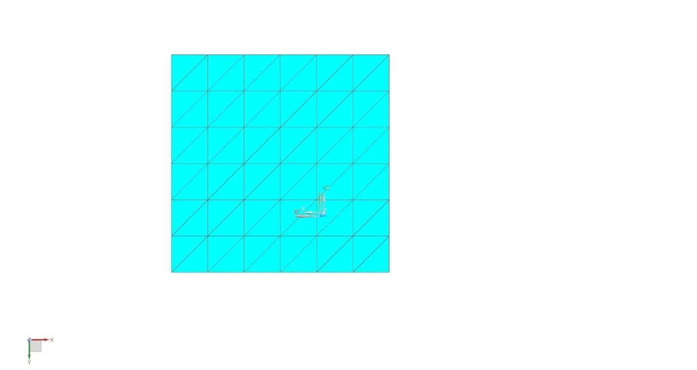
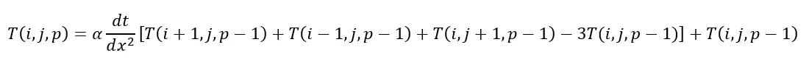
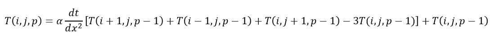
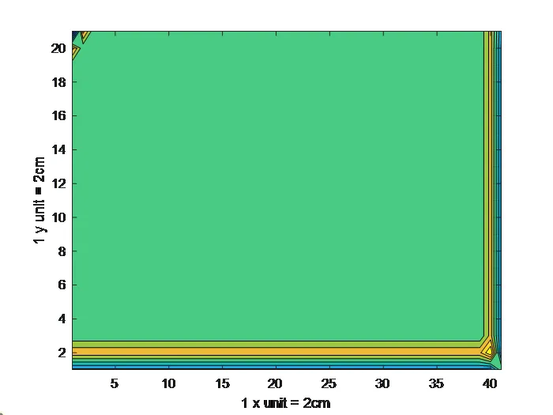

Utilizing CAD and finite element analysis softwares like Solidworks and Siemens NX to simulate various stress tests in various environments. This is applicable in various fields like civil, automotive, mechanical and aerospace engineering. Various structures are first simulated for their performance and then tested. The tests are compared to simulations to improve the simulation, product design and develop better models to explain behaviour. Here are some works I have done in this field:
Application of heat transfer principles to electronics box attached to a radiator.
Comparing contour map over time simulated in MATLAB and Siemens NX.
Comparing theory results with the simulation results.
Conducting a series of sine and random vibration tests on PCB on a vibration table. Comparing results with simulations.
Calculating shear stress profiles of an icesheet in MATLAB based on different models.
The model given is an electronics box housing 2 CCAs (containing two EEE junctions each), a CHASSIS to house them which is sandwiched between Pedestal that contains RF connections. The bottom pedestal is screwed to a space craft radiator. Here is a picture of the model. Here’s the cross-section various displaying units and components in the subsystems:
0D Meshes
For the EEEs’ a mesh point was defined on each of the components. Based on the design, separate collectors were made for each component. These were referenced as U51 for rectangular footprint, U84 for square footprint for the top CCA and U23 for rectangular footprint, U32 for square footprint on the bottom CCA. A 0D mesh was made on each of them defined using the mesh point. No radiation defined for these meshes.
For TOP CCA and BOTTOM CCA respectively. Material Properties: 17% Copper PWB
2D Meshes
2D meshes were defined for S/C radiator and the CCAs. Entire surface area was selected for meshing, including the EEE junctions as they were defined at a mesh point. Properties: Thin shell for 8 layer PWB (0.062 in), Material: 17% Copper PWB. No Radiation Separate mesh collector for each CCA.
For S/C radiator. Properties: Material: Aluminium 6061, Thin Shell for radiator with assumed 50 mm, thermo optical properties defined for top and bottom surface as a aluminized Teflon 10 mil, sample 2.
TOP CCA (Top, Profile and Bottom view):
BOTTOM CCA (Top, Profile and Bottom):
S/C Radiator

3D Meshes
3D meshes were developed for bodies such as the top and bottom pedestal parts and the CHASSIS. Both had no radiative properties and Material was Aluminium 6061 Separate mesh collectors for each pedestal and chassis.
3D view of Meshed Chassis
3D view of Meshed Pedestal
*Calculation:
17% CU and 83% FR-4
From lecture slides
Cu (RHO- 8941, Cp -285, k-385) FR-4 (RHO -1522.4, Cp-1465, k-0.346)
8 layer PWB -> thickness – 0.062 in
AVG RHO-8941x0.17+1522.4x0.83 = 2783.56 kg/m^3
AVG CP-385x0.17+1465x0.83 = 2783.56 J/kgK
AVG k-385x0.17+0.346x0.83=6574 W/mK
Additional properties:
17% CU PCB: Thin Shell Thickness 0.062 in
S/C Radiator: Thin Shell Thickness 50 mm
Aluminized Teflon 10 mil-Emissivity: 0.83, Absorptivity: 0.17 (from Thermal Control Handbook by Gilmore Book-> Appendices)
 Pedestal Bottom to S/C radiator
Pedestal Bottom to S/C radiator Cold Case
Cold Case
Click below to download the NX sim files.
The object is defined as follows with respect to my student number: The mesh size is defined to be dx=4 cm. The task is to find the change in temperature distribution in the plate within increments of 12, from 0 to 60 seconds using Matlab and NX. Compare both results.
Assumptions:
 Case 2
Case 3
Case 4
Case 5

Case 6
Case 7
Case 2
Case 3
Case 4
Case 5

Case 6
Case 7

From the NX:
Results from MATLAB:


The results vary mostly due to significant errors caused by using larger time stepsizes in MATLAB. Since code in Matlab is not efficient in providing calculations for smaller stepsizes as they are heavy for the computations, the NX is able to provide a much smoother plot. I also was not able to deliver the desired plot in Matlab since I wasn’t able to code it.
As for the temperature distribution, The temperature seems to decrease from the top left corner to the right, showing the 2D diffusion at work between the different.
Click below to download the NX sim files and matlab code to plot the contours.
The natural frequency of the specimen PCB with relation to a similar known PCB is given by:
 f = natural frequency
f = natural frequency
a = length
b = width
h = thickness
γ = density
μ = poisson’s ratio
E = modulus of Elasticity
In terms of similarity the Case 13 is most like the PCB given. It has the same configuration in terms of the fixture
Its properties are as follows: length a1 = 6 inch, width b1 = 4 inch, h1 = 0.10 inch, density γ1 = 0.208 lb/inch3, Young’s Modulus (Flexural Modulus) E1 = 10.5x106 lb/in2, Poisson ratio = 0.12
The material properties derived are of Epoxy Fibreglass from the reference provided.(“Avoiding Vibration in Odd-Shaped Printed-Circuit Boards”, Steinberg, D.S.,)
The properties of the specimen PCB: length a2 = 304.8x0.040= 12 inch, width b2 = 243.7x0.040 = 9.6 inch, h2 = 1.6x0.040 = 0.06 inch, density (with the holes)
Young’s Modulus E2 = 44.1 GPa or 6.40x106 (from Matweb), Poisson’s ratio:
Therefore, the first natural frequency:
The second natural frequency:
The third natural frequency:
Assumption made in making the model: The PCB is pinned on the table through the 6 holes. Therefore fixed on those locations.
The normal modes as calculated by NX Nastran was: 172 Hz, 223 Hz and 418 Hz
The hand calculated values are off by one magnitude.
The reason for this is that the approximation made is dependent on the similarity of the case PCB with the specimen PCB. Since the case PCB is made of different material than the specimen PCB (epoxy fiberglass instead of glass epoxy prepreg) which might exacerbate the margin of error within each mathematical operation. This method is not as exact as the differential method that NX uses, which allows for a higher degree of accuracy as the elemental analysis is more thorough than a general body analysis.
Here are mode shapes for the three frequencies in order:
Click below to download the NX sim files. Note: File larger than 800 MB.
The purpose of this task is to find the behaviour of the shear stress of an ice sheet under different conditions.
I have used MATLAB to do all the iterative calculations, store the calculations in systematic way and present the data as the relevant plot.
The basic format my code follows:
 Loops (iterative calculations)
The above uses the equations defined in the introduction. For constant density it directly calculates the shear stress with the constant density initialised in the previous part and appends it to an indexed value (z+1) in the respective vector. For variable density it first calculates the pressure, appends it to the respective vector, then uses this value to calculate the density. This variable density is then used to calculate shear stress which is stored in a different vector indexed by (z+1). Note: the shear stress also calls on the previous value to use in calculations. Then the error is calculated as the abs value of difference between the two shear stresses over the variable density times 100. The layer (z) is then incremented by 1 and loop repeats as long the z stays under 61. This ensures that the calculations happen till the depth of 3km.
Loops (iterative calculations)
The above uses the equations defined in the introduction. For constant density it directly calculates the shear stress with the constant density initialised in the previous part and appends it to an indexed value (z+1) in the respective vector. For variable density it first calculates the pressure, appends it to the respective vector, then uses this value to calculate the density. This variable density is then used to calculate shear stress which is stored in a different vector indexed by (z+1). Note: the shear stress also calls on the previous value to use in calculations. Then the error is calculated as the abs value of difference between the two shear stresses over the variable density times 100. The layer (z) is then incremented by 1 and loop repeats as long the z stays under 61. This ensures that the calculations happen till the depth of 3km.
We can notice from the trends that the magnitude of shear stress increases with the depth of the ice sheet, as the stresses of the previous layers add up. Since the stresses are added, it is no surprise that the trend is linear. It is also seen that when accounting compounding pressure and densities as the layers push down, the stress seems to increase at a higher rate. This is more realistic since the increasing mass of the ice above increases the downward weight force. As the area is still constant, pressure also increases. With increases pressure the ice becomes more compact and density increases, increasing the amount of stress acting on each particle due to smaller space.
As for slope and fracture level, it has been observed that increasing the angle makes the ice sheet more unstable, decreasing the depth at which fracturing occurs. Increasing the angle makes the direction of the normal force shift nearer to the ground in the direction of the slope. Therefore, this increases the resultant force downwards across the slope laterally, increasing the shear stress. Steeper the slope is, easier it is for the top layers of the ice sheet to slide down.
Click below to download the Matlab code.